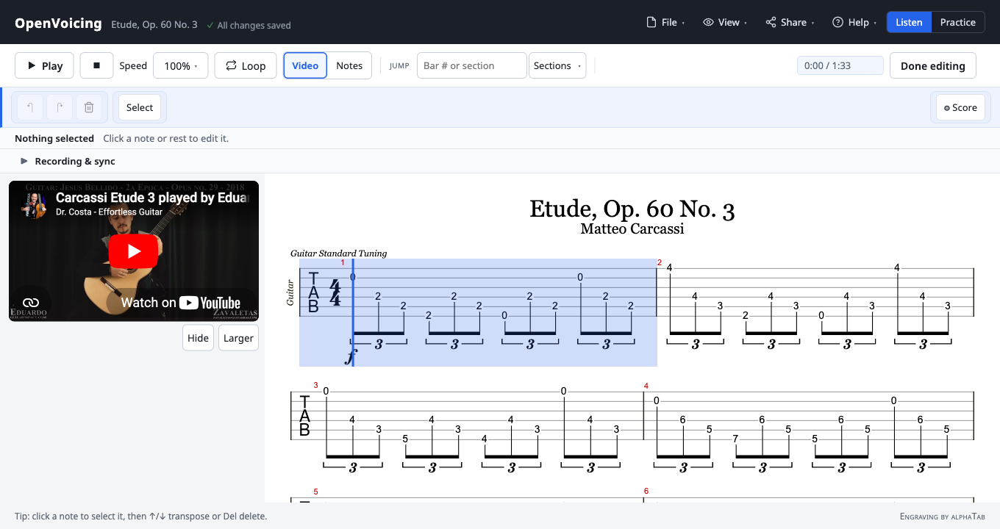

Guitar demo · YouTube + tablature Alpha
Carcassi's Étude in A, Op. 60 No. 3: the tablature lined up bar by bar with a Creative Commons performance. Press play and the video leads while the tab follows; slow it down, loop a phrase, or open the same file in the editor.
The player below is a real OpenVoicing embed. The video sits beside the tablature, and the cursor tracks the performance bar by bar.
The same file opens in the full editor: change frets and notes, retime the sync to the video, or attach your own recording. It's the same piece, not a copy.

This whole demo is a single .ovb file: the public-domain Carcassi étude as tablature, the YouTube performance it points to, and a sync map that lines the two up. You could host that file yourself and embed it the same way.
The performance is a Creative Commons (CC BY) recording by Eduardo Minozzi Costa. Its downbeats were found from the bass notes that open each bar, so the tab follows the actual timing, not a fixed metronome. You can nudge any bar by hand in the editor.
Play along with a recording →The home page demo is Bach's Invention No. 8, a harpsichord recording behind two-staff notation. This one is a single guitar with tablature and a video. Same format, same tools, very different music.
See the Invention No. 8 demo →Your turn
No sign-up, no upload. Import your own MusicXML or Guitar Pro, sync it to a recording or a YouTube video, and keep the file.